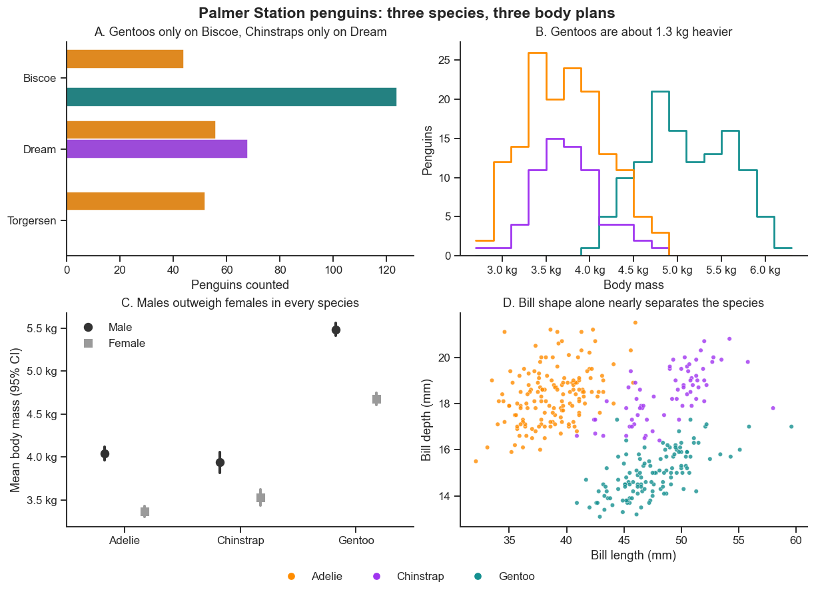

Seaborn with Penguins
A hands-on course in making clear, honest, good-looking charts with seaborn and matplotlib. Seven short lessons use one friendly dataset. Every example runs live in your browser.

The figure you’ll build in Lesson 7. Every technique in it is taught along the way.
Who this is for
You’re comfortable with Python basics and pandas (read_csv, selecting columns, groupby, filtering rows), and you want to make charts that are both quick to produce and good enough to show other people. You don’t need any prior matplotlib or seaborn.
The lessons
Each lesson takes about 45-75 minutes and has the same rhythm. Worked examples come first, then a design principle callout, then graded exercises with solutions, then a short quiz.
Meet the data: Palmer penguins
Between 2007 and 2009, Dr. Kristen Gorman and the Palmer Station Long Term Ecological Research program measured 344 penguins on three islands in the Palmer Archipelago, Antarctica. Allison Horst, Alison Hill and Kristen Gorman released the data as the friendly alternative to the overused iris dataset. It ships with seaborn:
import seaborn as sns
penguins = sns.load_dataset("penguins")
| Column | Meaning | Type |
|---|---|---|
species |
Adelie, Chinstrap or Gentoo | category |
island |
Biscoe, Dream or Torgersen | category |
bill_length_mm |
length of the bill (culmen) | number |
bill_depth_mm |
depth (height) of the bill | number |
flipper_length_mm |
flipper length | number |
body_mass_g |
body mass in grams | number |
sex |
Female or Male (11 missing) | category |
It’s small enough to see every point, but it’s real data. It has missing values, three groups with different body plans, and a genuine statistical paradox waiting in Lesson 1.
Three ways to follow along
- Right here in the browser (no install). Click Run or Edit & run on any code cell. The first run downloads a Python runtime (Pyodide, about 30 MB) into your browser, which takes 10-30 seconds. After that, cells run in a second or two. Your exercise code is saved in this browser.
- Google Colab. Each lesson has an Open in Colab link at the top, plus a solutions notebook.
- Your own machine. Download the notebooks and install the libraries:
pip install "seaborn==0.13.2" "matplotlib>=3.8" "pandas>=2.0" jupyterlabThe code targets seaborn 0.13. Older versions use different names for some arguments (for example ci= instead of errorbar=).
Tip: In a script (not a notebook), finish with
plt.show()to open the chart window. Notebooks and this site display charts automatically.
The design thread
Seaborn makes charts quickly. This course is just as concerned with making them well. Each lesson includes a design principle callout, drawn mostly from Stephen Few’s Show Me the Numbers and from Edward Tufte. The core ideas:
- Start from the question, and choose the chart form that answers it.
- Encode the important comparison with position or length on a common scale.
- Use color only when it means something, the same way every time, and safe for colorblind readers.
- Remove ink that isn’t data. Label directly. Write titles that state the finding.
Ready? Start with Lesson 1 - Your first plot.
Teaching this material? See the instructor guide.